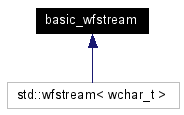

basic_wfstream Class Reference
Inherited by std::wfstream.
Inheritance diagram for basic_wfstream:

[legend]
The documentation for this class was generated from the following file:
Generated on Fri Dec 2 01:03:51 2005 for AISDI Cwiczenie 4 by
 1.4.5
1.4.5